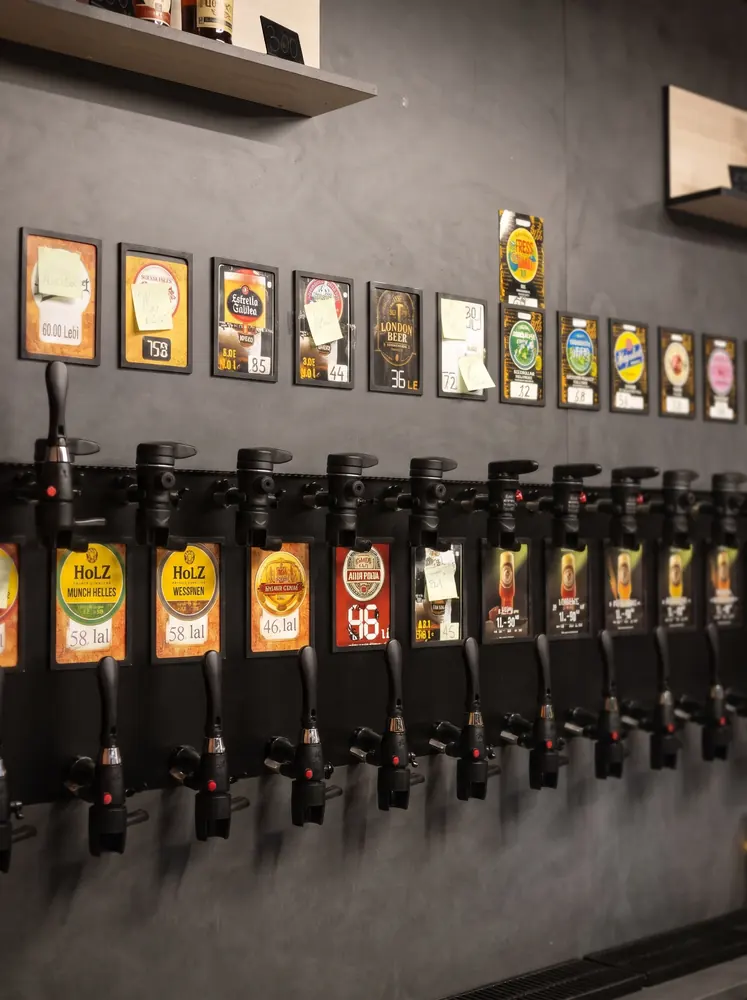

РАЗЛИВНОЕ И ЖИВОЕ ПИВО · КИШИНЁВ
Разливное пиво в Кишинёве
Холодное свежее пиво прямо из кег. В магазинах GYM BEER на Ботанике (бул. Куза Водэ 1/4) и Буюканах (ул. Алба Юлия 23/2) представлено до 32 сортов разливного и живого пива — с собой в ПЭТ 1,5 л или на месте.
Обновлено: · Ежедневно 10:00–22:00 · Ботаника (ул. Куза Водэ 1/4) и Буюканы (ул. Алба-Юлия 23/2) · Наличные, Карта и maib liberCard · +373 69 482 293

Какие сорта разливного пива есть на кранах
- Светлое, лагер и пилс: HOLZ Munich Helles, HOLZ Vienna Lager, HOLZ Gold, Kozel Světlý, Groll Royal Pils, Hopfenbräu Pils, Götter Pilsner (фильтр./нефильтр.), London Beer и Жигулёвское.
- Пшеничное и тёмное: HOLZ Weissbier, Kozel Černý, Götter München, Beermaster Cherry Bock, Hopfenbräu AGA.
- IPA и ароматные сорта: HOLZ IPA, Beermaster IPA & Session IPA, American Pale Ale, Götter IPA, Götter Mosaic и Fresh Mango IPA.
ВОПРОСЫ И ОТВЕТЫ
Полезная информация
Сколько стоит разливное пиво в GYM BEER Кишинёв?
Ориентировочные цены начинаются от 36 MDL и зависят от сорта (лагер, пилс, пшеничное, тёмное или крафтовый IPA). Полный список смотрите в разделе Меню.
Можно ли взять разливное пиво на вынос?
Да, мы наливаем свежее разливное пиво прямо из крана в ПЭТ-бутылки 1,5 л с сохранением карбонизации и свежести.
Где купить живое пиво GYM BEER в Кишинёве?
Два магазина открыты ежедневно с 10:00 до 22:00: Ботаника (бул. Куза Водэ 1/4) и Буюканы (ул. Алба Юлия 23/2, рядом с RK Rich Kebab).
Другие разделы GYM BEER Кишинёв: Крафтовое пиво и IPA в Кишинёве · Копчёная рыба и закуски к пиву в Кишинёве · Безалкогольное пиво 0.0% в Кишинёве · Пиво на вынос (ПЭТ 1,5 л) в Кишинёве · Гид: какие закуски выбрать к каждому пиву
Популярное разливное пиво на кранах в GYM BEER Кишинёв
| Позиция | Профиль / Рекомендация | Цена / Подача |
|---|---|---|
| HOLZ Munich Helles | Хеллес · 4,3% | 58 лей |
| Götter Pilsner | Пилснер · 4,8% | 48 лей |
| Götter Pilsner Nefiltrată | Живое нефильтрованное | 48 лей |
| Kozel Světlý | Чешский светлый · 4,0% | 54 лей |
| Kozel Černý | Чешское тёмное · 3,8% | 54 лей |
| HOLZ Weissbier | Пшеничное · 5,0% | 60 лей |
| Jigulevskoe | Классический лагер | 44 лей |
Подробные гиды: Живое нефильтрованное vs фильтрованное · Изобарический розлив Pegas · Как налить пиво с идеальной пеной · Все гиды (18) ↗